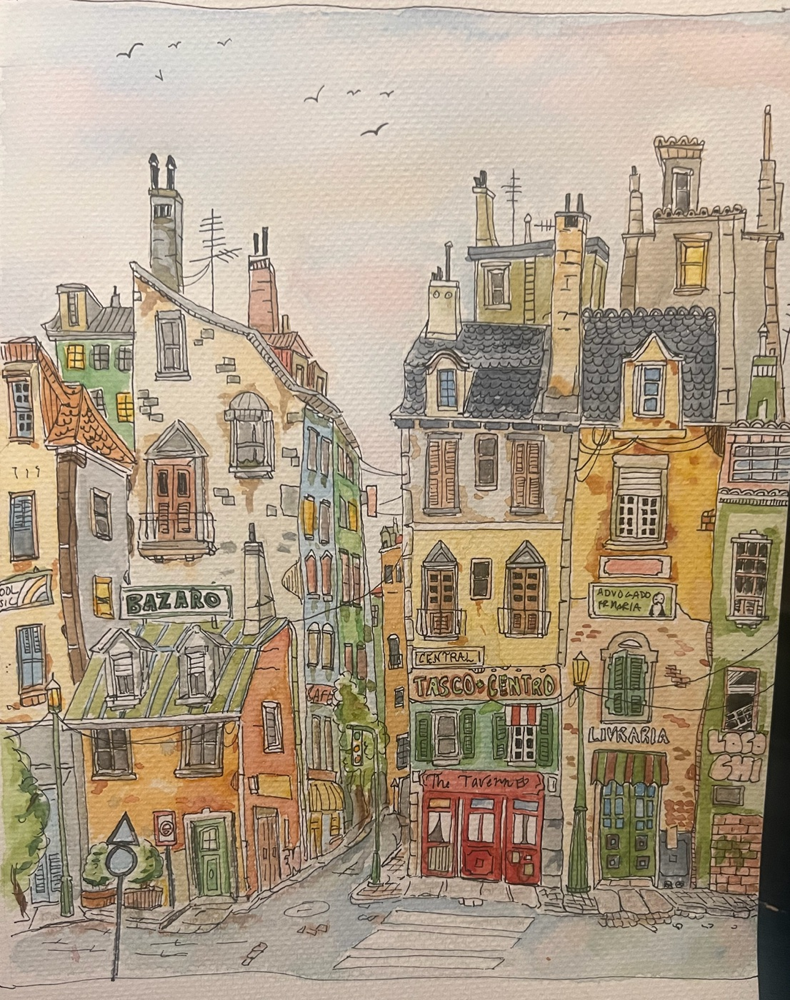
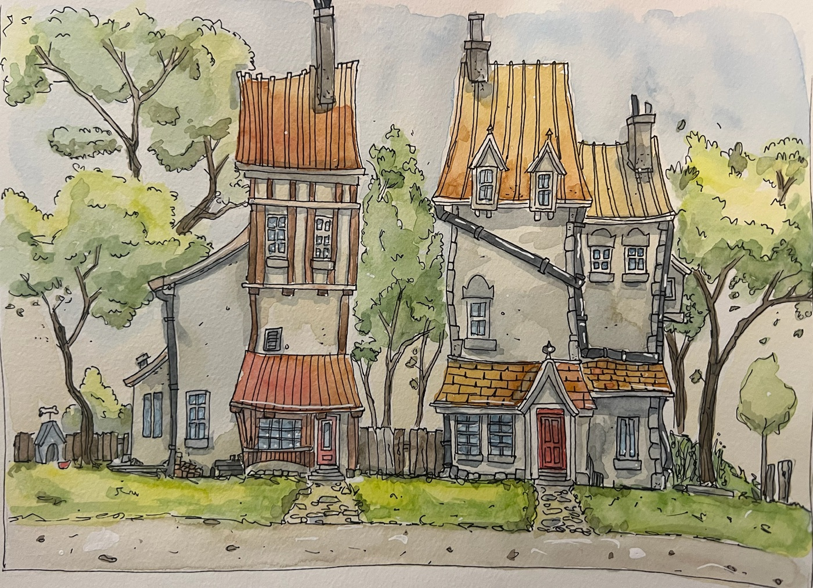
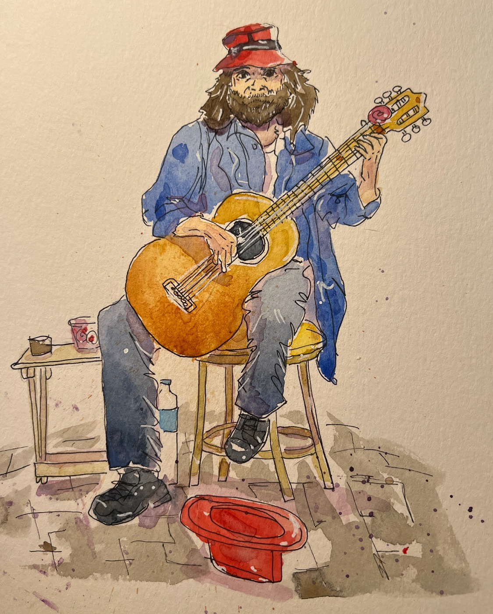
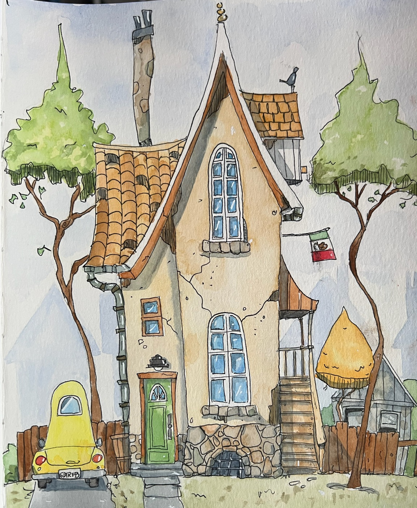
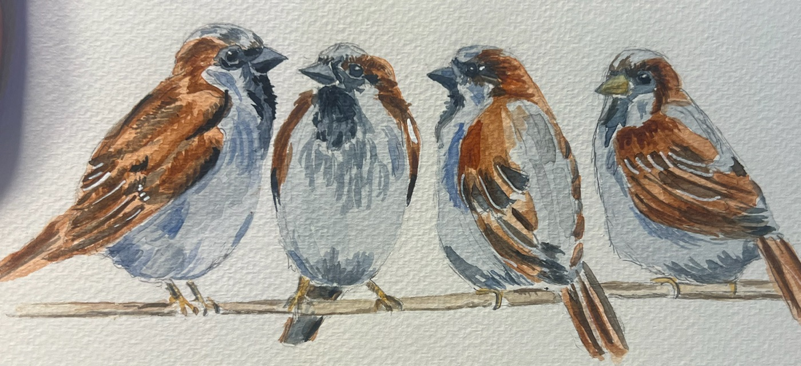
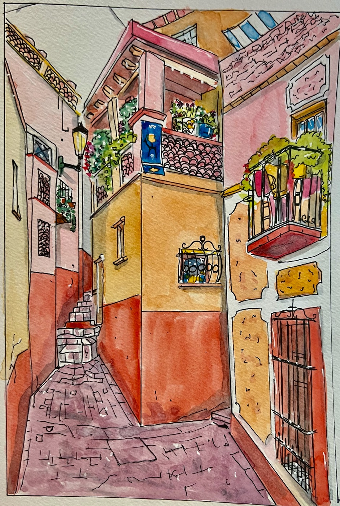
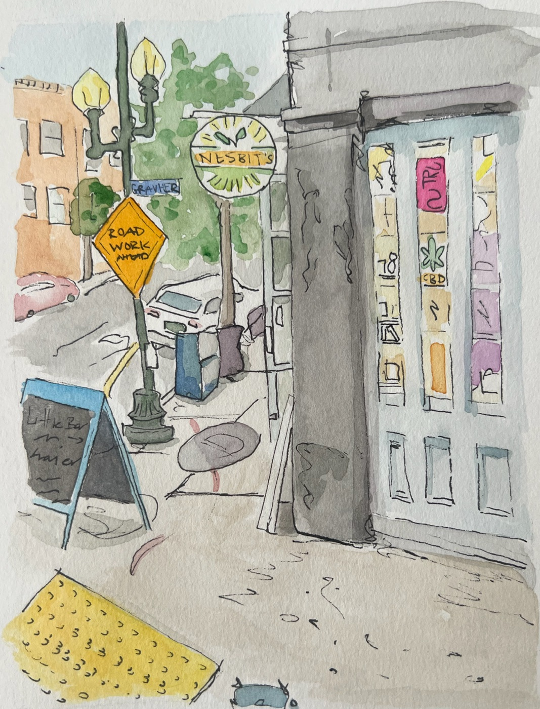

Beyond the lab
Live Music, Books & Watercolor
Jump to live music, reading, or making art.
Live music
I’ve seen Phish 106 times, starting in 2003 and most recently in July 2026. Naturally, I’ve kept the data.
Shows by year
Shows by month: summer is the season
Most-heard songs
- Chalk Dust Torture 28
- Backwards Down the Number Line 27
- Bathtub Gin 27
- Harry Hood 27
- 46 Days 26
- Character Zero 26
- Down with Disease 25
- The Moma Dance 25
Above expectations
Based on how often the band plays it, I “should” have heard Backwards Down the Number Line about 7 times. I’ve heard it 27. Meanwhile, Llama: expected 16, heard 2.
Shelves that run from history to dread
My shelves run from drama and historical fiction to nonfiction, suspense, and horror. I like a book that pulls me into another time, another mind, or a creeping sense of dread, ideally all three.
Reading now
- Bullshit JobsDavid Graeber
- Fruit FlyJosh Silver
- Empire of AIKaren Hao
- House of LeavesMark Z. Danielewski
Fiction, history & big feelings
- A Fine BalanceRohinton Mistry
- PachinkoMin Jin Lee
- Tomorrow, and Tomorrow, and TomorrowGabrielle Zevin
- A Thousand Splendid SunsKhaled Hosseini
- AtmosphereTaylor Jenkins Reid
- The Great AloneKristin Hannah
- The NightingaleKristin Hannah
- A Little LifeHanya Yanagihara
- My Dark VanessaKate Elizabeth Russell
- Still AliceLisa Genova
- The Poisonwood BibleBarbara Kingsolver
- The MartianAndy Weir
- The Memory PoliceYoko Ogawa
- I Who Have Never Known MenJacqueline Harpman
- Dungeon Crawler CarlMatt Dinniman
Suspense & horror (Stephen King and Anne Rice each get their own corner)
- The Perfect DivorceJeneva Rose
- The TenantFreida McFadden
- The Night She DisappearedLisa Jewell
- The ExFreida McFadden
- The Housemaid Is WatchingFreida McFadden
- Incidents Around the HouseJosh Malerman
- The Maid’s DiaryLoreth Anne White
- The Business TripJess Ryder
- Fairy TaleStephen King
- 11/22/63Stephen King
- The TalismanStephen King & Peter Straub
- ItStephen King
- JoylandStephen King
- Doctor SleepStephen King
- The ShiningStephen King
- Duma KeyStephen King
- The Yellow WallpaperCharlotte Perkins Gilman
- Tender Is the FleshAgustina Bazterrica
- Interview with the VampireAnne Rice
- The Vampire LestatAnne Rice
- The Queen of the DamnedAnne Rice
Nonfiction & memoir (yes, including two books about bird minds)
- Drug Use for Grown-UpsCarl L. Hart
- SparePrince Harry
- Maybe We’ll Make ItMargo Price
- No FilterPaulina Porizkova
- Deep Down DarkHéctor Tobar
- Smoke Gets in Your EyesCaitlin Doughty
- Eating AnimalsJonathan Safran Foer
- Under the Banner of HeavenJon Krakauer
- Into the WildJon Krakauer
- Into Thin AirJon Krakauer
- Bird SenseTim Birkhead
- Alex & MeIrene Pepperberg
- This Is Your Brain on MusicDaniel J. Levitin
- The Anthropocene ReviewedJohn Green
- Wherever You Go, There You AreJon Kabat-Zinn
The gallery wall
I paint in ink and watercolor, mostly crooked old buildings, street corners I’ve wandered past, and birds with a bit of attitude.















